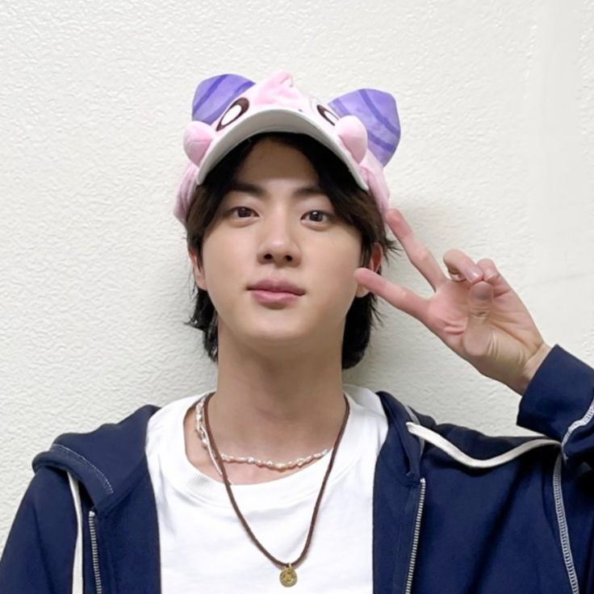

Jin

Summary
I am a hardworking and dedicated individual with experience in customer
service and tele-calling.
Education
-
Bachelor of Computer Applications XYZ COLLEGE, XYZ NAGAR | 2021 - 2024
Work Experience
-
FUTWORK Tele-Caller Customer Service
2022
-
Consistently met and exceeded daily call quotas while maintaining a
high standard of professionalism.
-
Conduct outbound calls to prospective customers, identifying their
needs, and promoting relevant products or services.
- Answered customer inquiries via phone and email
-
Worked on various projects including Stage App subscription renewal,
upGrad Masterclass RSVP confirmation etc.
- Resolved customer complaints and issues
-
Initiated outbound calls to introduce products/services, schedule
appointments, and generate leads.
- Maintained customer records and updated account information
-
Handle customer inquiries, resolve issues promptly, and maintain a
high level of customer satisfaction.
Skills
- Tele-Calling service: ⭐️⭐️⭐️⭐️⭐️
- Customer service: ⭐️⭐️⭐️⭐️⭐️
- Microsoft Office Suite: ⭐️⭐️⭐️⭐️⭐️
- Computer skills: ⭐️⭐️⭐️⭐️
Certifications
Other